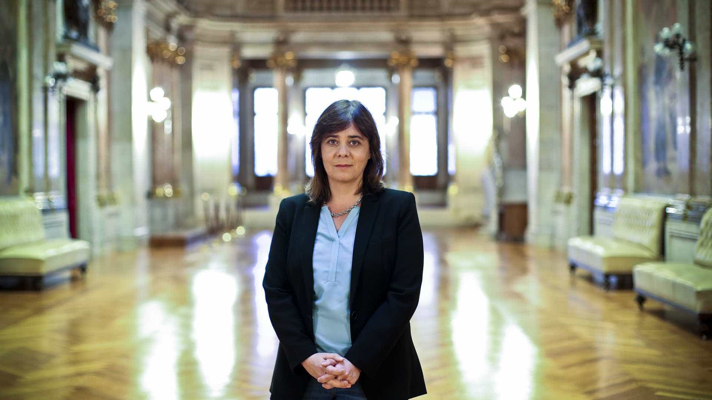

Os chefes de Estado e de Governo dos 27 validaram hoje o acordo de saída do Reino Unido da União Europeia ('Brexit') e a declaração política da relação futura com este país, o primeiro a sair do projeto europeu.
Catarina Martins considerou que olhar hoje para a União Europeia é perceber "que é um projeto que mostra o seu falhanço".
"O 'Brexit' é um sinal desse falhanço, falhanço da expectativa popular num projeto europeu que dê melhores condições de vida", adiantou a coordenadora do Bloco, que falava aos jornalistas à margem dos Encontros Ecossocialistas.
Defendendo que "a vontade do povo deve ser respeitada" e que em relação à saída do Reino Unido da UE nada pode ser feito, considerou, no entanto, ser "preciso seguramente responsabilidade política e tirar consequências do que o 'Brexit' e outros movimentos de desagregação europeia significam".
Para o BE, "há três caminhos", disse.
"Há o caminho de quem faz de conta que está tudo bem, como quem tem dirigido a União Europeia até hoje e o que propõe é já na próxima terça-feira institucionalizar o tratado orçamental, ou seja, tornar a austeridade a política única da União Europeia, como se não fosse essa mesma política que trouxe esta crise, 'Brexit' e outras questões que se levantam", declarou Catarina Martins.
A coordenadora do BE indicou existir ainda "a política da extrema-direita, da xenofobia" como se vê "noutros países da Europa e que só cria ódio" e "a necessidade de uma outra resposta, de uma resposta que tenha um novo projeto para a Europa", salientando ser por esta que o Bloco luta.
"Este é o momento do projeto por uma Europa social, baseada nos direitos do trabalho, no Estado social universal e seguramente no combate à crise ambiental que é o maior desafio que nós temos na Europa e achamos que pode ser aliás o desafio que respondendo a academia, os sindicatos, os partidos, os movimentos pode ser a resposta também à crise económica", disse, referindo crer que os Encontros Ecossocialistas, juntando "400 participantes, gente de partidos, movimentos, sindicatos" são "um sinal do que tem de ser feito".
"Este é o momento de quais são as respostas. O 'Brexit' está. O que queremos a partir daqui? Nós queremos um novo plano para a Europa", afirmou Catarina Martins.
Antes da validação do acordo para o 'Brexit', o presidente da Comissão Europeia, Jean-Claude Juncker, disse que ele era "o melhor possível", salientando, no entanto, que este é um dia triste e de tragédia.
Para a primeira-ministra britânica, Theresa May, o acordo alcançado com os 27 Estados-membros da União Europeia honra o referendo, o país e poderá ser aprovado pelo parlamento britânico ainda antes do Natal.
O primeiro-ministro, António Costa, considerou, por seu turno, que o processo negocial que culminou hoje com o aval dos 27 ao acordo do 'Brexit' foi uma das manifestações mais importantes da solidez e do futuro do projeto europeu dos últimos anos.